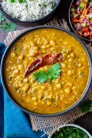

A hearty, nutritious, and flavorful dish made with split chickpeas, perfect with rice or roti.
Ingredients
1 cup chana dal (split chickpeas)
2 tablespoons oil or ghee
1 onion, finely chopped
1 tomato, finely chopped
2 green chilies, chopped
1 tablespoon ginger-garlic paste
1/2 teaspoon turmeric powder
1 teaspoon cumin seeds
1 teaspoon coriander powder
1/2 teaspoon garam masala
1/4 teaspoon red chili powder
Salt to taste
3 cups water
Fresh coriander leaves, chopped for garnish

You can watch this video for reference.
Instructions
Rinse the chana dal thoroughly and soak it in water for 30 minutes to 1 hour.
In a pressure cooker or large pot, heat the oil or ghee over medium heat.
Add cumin seeds and let them splutter. Then, add the chopped onions and sauté until golden brown.
Add ginger-garlic paste and sauté for another minute until the raw smell disappears.
Add the chopped tomatoes, green chilies, turmeric powder, coriander powder, red chili powder, and salt. Cook until the tomatoes soften and the oil begins to separate from the masala.
Add the soaked chana dal along with 3 cups of water. Stir well.
Close the lid of the pressure cooker and cook for 3-4 whistles (or cook in a regular pot for 30-40 minutes until the dal is soft).
Once done, open the lid and add garam masala. Stir and cook for another 5 minutes to blend the flavors.
Garnish with fresh coriander leaves and serve hot with rice or roti.